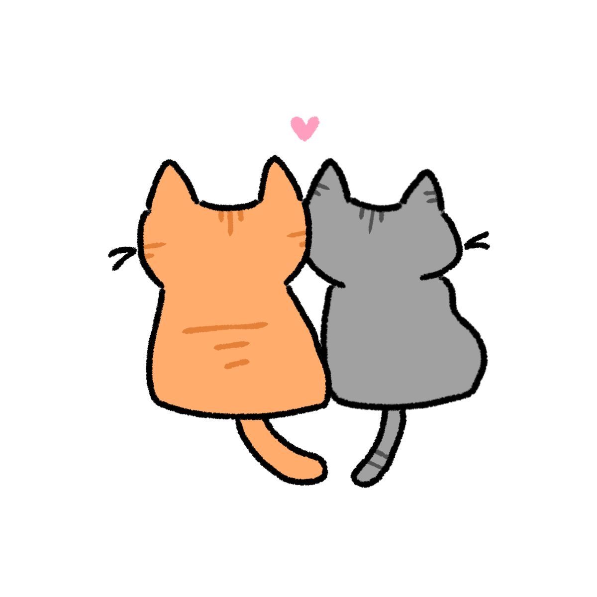

个人角落 · A LITTLE CORNER OF MY OWN
你好，欢迎来到
Strawberry Breath.
这是一个属于自己的小小角落，收集喜欢的作品，也记录那些让我停下来思考的时刻。
我对世界始终有不少好奇。电影、书籍、心理学、历史，以及日常生活中看似寻常的问题，都可能成为我继续探索的起点。我尤其关注女性主义与个体处境，喜欢从一部作品、一段关系或一个社会现象出发，试着看见表面之外的东西。
这里没有固定的主题边界，也不急着给每一种兴趣归类。我想认真分享那些真正触动过我的内容，也留下自己在阅读、观察和思考中的变化。观点可以继续生长，答案也可以不断修正。
去读第一篇文章 ↗保持好奇，也保留判断；认真理解世界，也认真对待自己的感受。不必急着成为谁期待的样子，人生可以有自己的节奏，想法也可以随着经历慢慢改变。
最近分享 · RECENT NOTES
最近想分享的 ✿
01FILM · WOMEN · GROWING UP
《福尔摩斯小姐》：把人生的答案，留给自己去寻找
从一位不愿按既定路线长大的年轻女性开始，聊聊选择、自由，以及成为自己的可能。
阅读文章 ↗ABOUT ME · 关于我
关于我
比起把自己定义成某一种固定的人，我更愿意保持开放：持续阅读，接触新的观点，也允许自己改变原来的看法。我相信思考不必总是得出一个标准答案，愿意追问、愿意理解复杂性，本身就很有意义。
我关心女性如何获得真正的选择空间，也关心人在亲密关系、家庭和社会期待之中，如何保有自己的主体性。对我来说，独立并不是拒绝帮助或永远坚强，而是能够辨认自己的意愿，在现实条件允许的范围内，一步步为自己争取选择。
当然，生活也有轻盈可爱的一面。两只猫的陪伴、喜欢的电影和书、偶尔发现的好东西，以及平凡日子里细碎的快乐，都是这个小小网站想要留下的部分。
